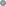
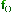

Content Completion in JavaScript Documents
When you edit a JavaScript document, the Content Completion Assistant presents you a list of the elements you can insert at the cursor position. It can be manually activated with the Ctrl + Space (Command + Space on OS X) shortcut.
For an enhanced assistance, JQuery methods are also presented. The following icons decorate
the elements in the content completion list of proposals depending on their type:
- - function
- - variable
- - object
-  - property
-  - method
Note: These icons decorate both the elements from the content completion list of
proposals and from the Outline view.
The Content Completion Assistant collects:
- Method names from the current file and from the library files.
- Functions and variables defined in the current file.